Visual and Audiovisual Identity Designer
Concept and design of campaigns promoting music artists. Creation of the visual identity and of audiovisual and graphic assets for social media and releases.
Dec 2025 - Present
Professional experience, university work, volunteering and freelance audiovisual editing and production commissions.
Visual and Audiovisual Identity Designer
Concept and design of campaigns promoting music artists. Creation of the visual identity and of audiovisual and graphic assets for social media and releases.
Production, Editing and Post-production Lead
Oníricom Comunicación SL - Madrid
Production of multi-screen audiovisual pieces and editing of institutional audiovisual pieces on heritage, culture and the environment.
Project Coordinator and Content Creator
Inspiring Girls Foundation - Panama
Projects for women's inclusion in the workforce: planning training workshops, motivational talks and mentoring sessions with women professionals. Design of the initiative's audiovisual and graphic content.
Co-founder and Producer - Raval Producciones
University production company - Valencia
Co-founded and ran a university audiovisual production company: organisation, budgets and scheduling. Production, directing and post-production of socially focused projects.
Production Assistant
Cargo Music SL - Madrid
Production of the Clazz Latin jazz festival at Sala Berlanga, Madrid: coordination with artists, technical crew and suppliers, logistics planning and on-site production support during the concerts.
Production and post-production
Short film built from the testimonies of local residents about the transformation of the Cabanyal-Cañamelar neighbourhood and its consequences.
Production
Production of the advertising campaign "Gente como tú" (spot, poster and radio ad) for Cáritas Interparroquial de Gandía: coordination with the client, the crew and the shoot at the shelter.
Art department and set photography
Short film inspired by the character of Lolita from Vladimir Nabokov's novel, exploring the complexity of identity and the passage of time in Lolita's life.
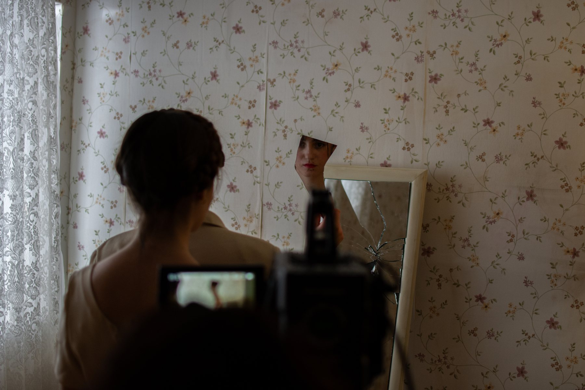
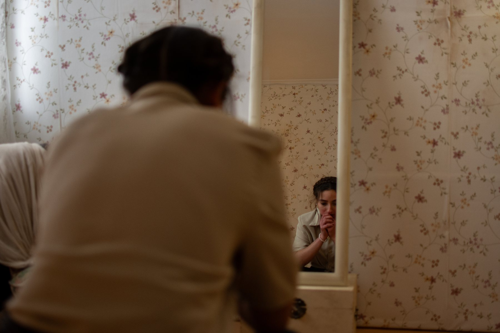
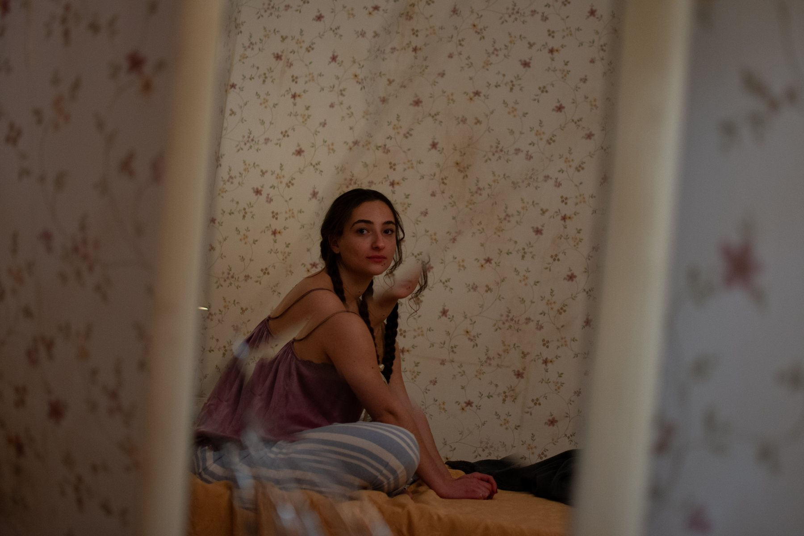
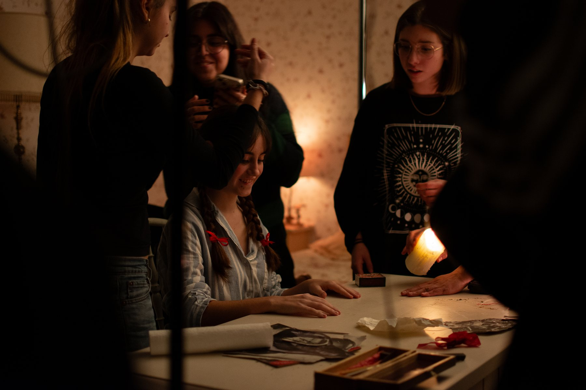
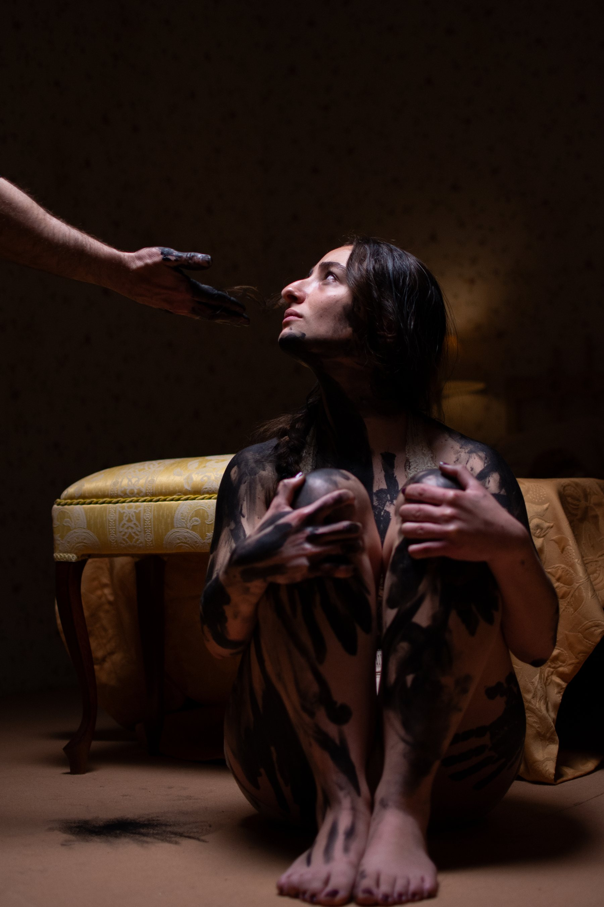
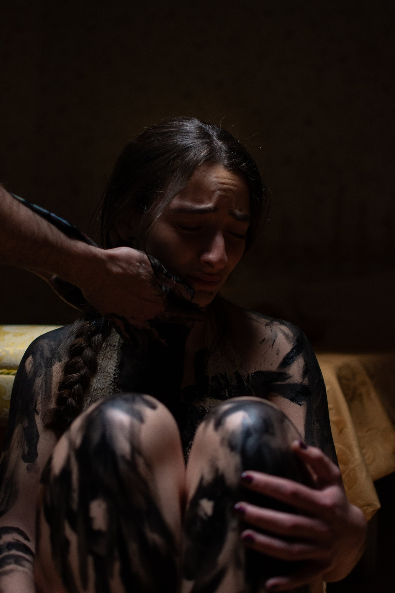
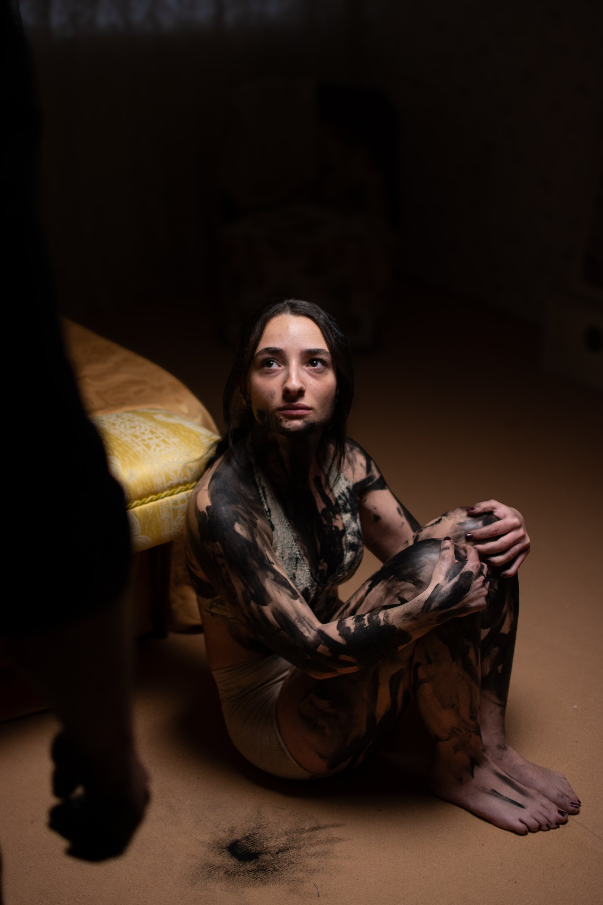
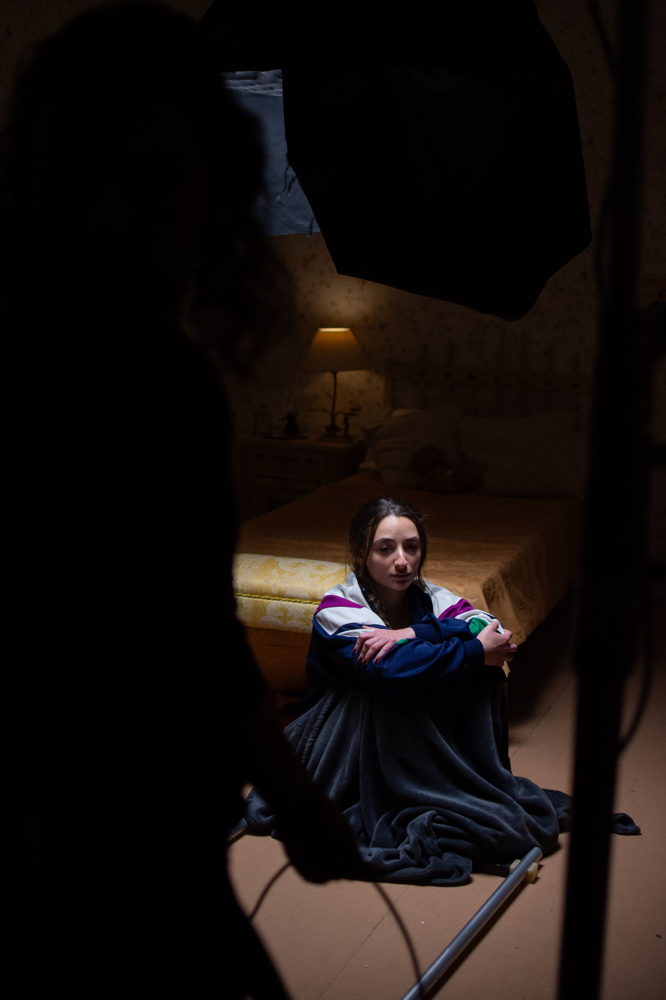
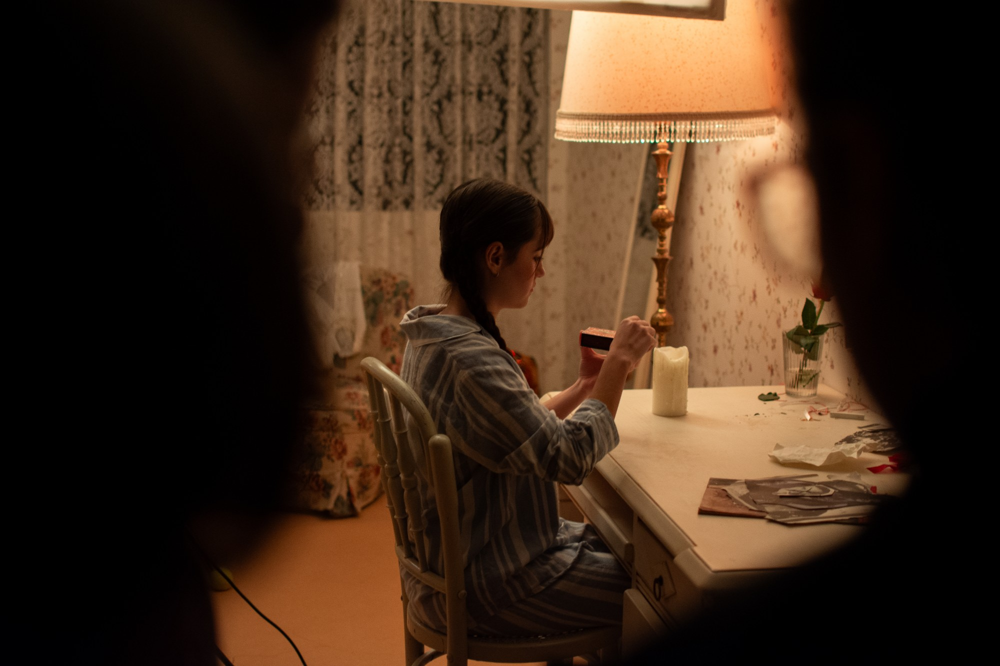
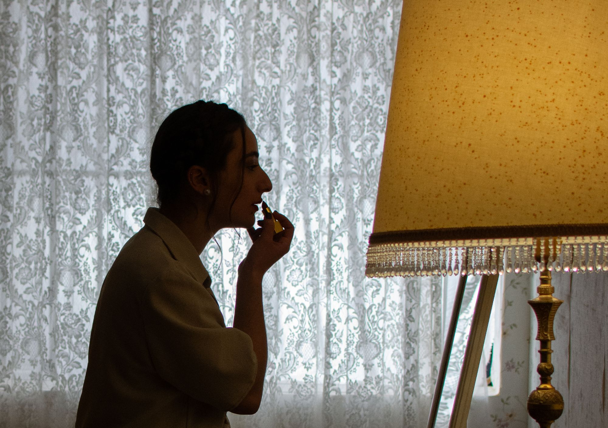
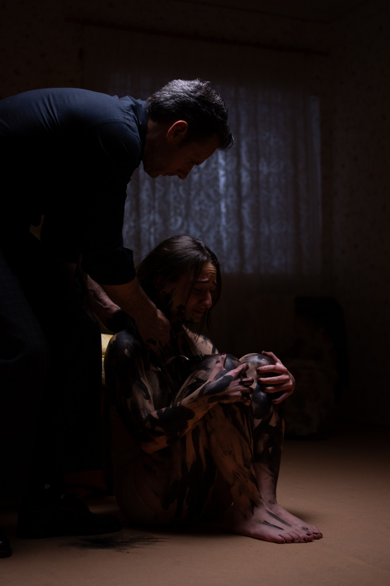
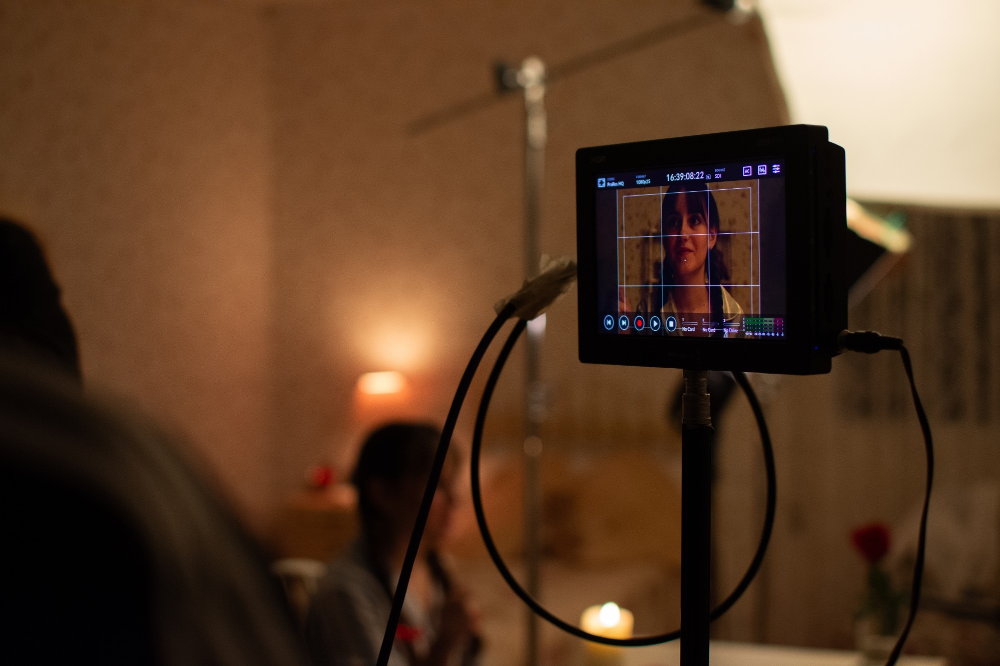
Solo production and post-production
Short film made during the workshop "Filmar el barrio de San Felipe", led by filmmaker Nayra Sanz Fuentes at the Centro Cultural de España en Panamá (CCEPA). The challenge: shoot and edit in a single day a piece reflecting our view of the neighbourhood's restoration and its consequences for the residents displaced by the process.
International foundation that connects girls and young women with women professionals to inspire their future aspirations.
Project coordinator and content creator
Coordinating and organising projects to bring Panamanian girls and teenagers closer to STEM: planning training workshops, motivational talks and mentoring with women in the field, plus designing the initiative's audiovisual and graphic content.
Latin American NGO building emergency housing and supporting community development.
Editing
Teaser for TECHO's rebranding, edited from footage shot by the organisation.
Editing
Institutional video on the natural heritage of the Spanish Royal Sites (El Pardo, Aranjuez, El Escorial, La Granja, Riofrío and Campo del Moro): flora, fauna and environmental protection.
Editing
Video on the European project restoring seabeds along the Catalan coast.
Editing
Closing video for the first phase of this urban rewilding community, promoted by Fundación Biodiversidad.
 🔒 Private video
🔒 Private video
Editing
Internal training videos.
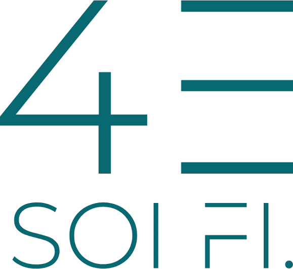
🔒 Private videoEditing
Audiovisual piece currently in production for the Church of Santa Catalina.
Production
Production of a multi-screen audiovisual piece for the three LED screens of Prosegur's Immersive Room.


Always open to new projects.